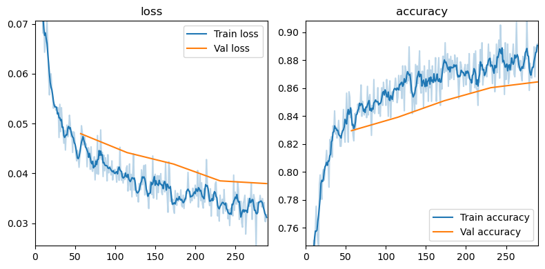

from tidygrad.utils.data import DataLoader, DataLoaders
from tidygrad.utils.datasets import MNIST, mnist_batch_tfm
from tidygrad.func import sigmoid, relu, BCE_loss, CrossEntropy_loss
from tidygrad.optim import Adam
from functools import partialTraining loop stuff
add_callbacks
add_callbacks (func)
Loss
Loss (train=True, valid=True)
Initialize self. See help(type(self)) for accurate signature.
MultiClassAccuracy
MultiClassAccuracy (train=True, valid=True)
Initialize self. See help(type(self)) for accurate signature.
Metric
Metric (train=True, valid=True)
Initialize self. See help(type(self)) for accurate signature.
DictLoggerCallback
DictLoggerCallback (metrics=None, history=None)
Initialize self. See help(type(self)) for accurate signature.
Learner
Learner (dataloaders, model, loss_func, optimizer, callbacks=[])
Initialize self. See help(type(self)) for accurate signature.
one_hot_encode_batch
one_hot_encode_batch (y, n_classes)
metrics_last_pretty
metrics_last_pretty (metrics, metrics_dict)
Return an str with the last values of the metrics, extended to match the length of the metric names, min 10 characters
metrics_names_pretty
metrics_names_pretty (metrics)
Return an str with the names of the metrics, extended to at least 8 characters
print_metrics
print_metrics (learner, metrics)
print_metrics_header
print_metrics_header (metrics)
ProgressBarCallback
ProgressBarCallback (metrics=['loss'], plot=True, plot_train_skip_ylim=10, plot_smooth_training=0)
Initialize self. See help(type(self)) for accurate signature.
| Type | Default | Details | |
|---|---|---|---|
| metrics | list | [‘loss’] | metrics to display, must be in the `learner.history`` dict |
| plot | bool | True | plot the metrics |
| plot_train_skip_ylim | int | 10 | skip the first N training metrics when calculating the ylim |
| plot_smooth_training | int | 0 | smooth the training metrics with a moving average of N |
| Returns | None |
BS = 1024
mnist_train = DataLoader(MNIST(fashion=True), batch_size=BS, shuffle=True, batch_tfms=[mnist_batch_tfm])
mnist_test = DataLoader(MNIST(train=False, fashion=True), batch_size=BS, shuffle=False, batch_tfms=[mnist_batch_tfm])
INT_DIM = 128
w1 = Tensor(np.random.randn(784, INT_DIM) * 0.1, "w1", requires_grad=True)
b1 = Tensor(np.ones((1, INT_DIM)) * 0.1, "b1", requires_grad=True)
w2 = Tensor(np.random.randn(INT_DIM, 10) * 0.1, "w2", requires_grad=True)
# b2 = Tensor(np.zeros((1, 10)), "b2")
def linear_model(inputs, params, debug=list()):
inputs.data = inputs.data.reshape(inputs.data.shape[0], -1)
x = inputs
w1, b1, w2 = params
# print("model inputs", x)
z1 = relu(x.mmul(w1, "z1") + b1)
z2 = z1.mmul(w2, "z2")
# print("model outputs", z2)
return z2
MM_func = partial(linear_model, params=[w1, b1, w2])
optimizer = Adam([w1, b1, w2], lr=0.005)
loss_f = lambda preds, targets: CrossEntropy_loss(preds, one_hot_encode_batch(targets.data, n_classes=10)).mean()
# loss_f = lambda preds, targets: CrossEntropy_loss(preds, one_hot_encode_batch(targets.data, 10))
student = Learner(
dataloaders=DataLoaders(mnist_train, mnist_test),
model=MM_func,
loss_func=loss_f,
optimizer=optimizer,
callbacks=[DictLoggerCallback(), ProgressBarCallback(metrics=[
"loss",
"accuracy",
], plot_train_skip_ylim=15, plot_smooth_training=5)],
)student.fit(epochs=5)
Ep | loss accuracy | val_loss val_accuracy 0 | 0.044432 0.844727 | 0.047987 0.829536 1 | 0.041537 0.853516 | 0.044185 0.839193 2 | 0.032763 0.871094 | 0.041888 0.851020 3 | 0.035643 0.875000 | 0.038516 0.860352 4 | 0.031717 0.891602 | 0.037972 0.864475
/home/xl0/work/projects/grads/tidygrad/tidygrad/optim.py:54: RuntimeWarning: underflow encountered in square
self.vs[i] = self.beta2 * self.vs[i] + (1 - self.beta2) * p.grad**2
/home/xl0/work/projects/grads/tidygrad/tidygrad/optim.py:54: RuntimeWarning: underflow encountered in multiply
self.vs[i] = self.beta2 * self.vs[i] + (1 - self.beta2) * p.grad**2